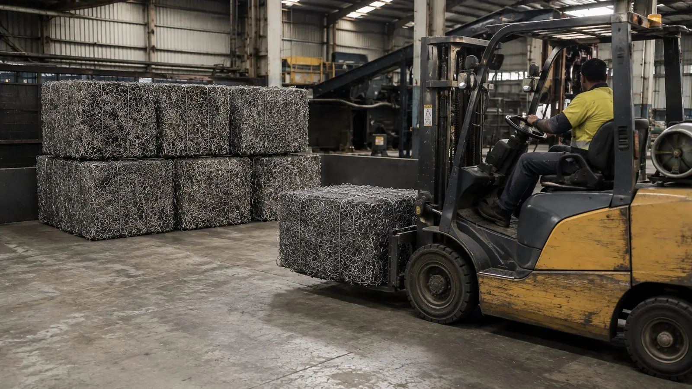

FAQ
Straight answers
The questions buyers, partners and procurement teams ask first. If yours is not here, ask us.
Buying
What steel do you actually supply?
Processed high-tensile spring steel recovered from mattress spring units at our facility in North Geelong, Victoria — around 99% ferrous, around 99% free of fabric and foam, loose or baled. Plus sorted ferrous scrap and non-ferrous lots. Specification.
How much is available?
Spring steel runs at 6–10 tonnes a day, typically 130–250 tonnes a month, year-round. Non-ferrous is accumulated to saleable lots and offered as they are ready.
Can I get a sample first?
Yes — always. We supply a physical sample before any commercial commitment so you can assess it against your own requirements.
Do you provide chemical analysis or lab certificates?
Not currently. We do not claim laboratory testing, chemical composition, moisture or certified bulk-density figures. Buyers are welcome to run their own assessment on a supplied sample.
Loose or baled?
Either. Loose for buyers with their own handling and shredding; baled for export and for buyers who want dense, easily counted loads. Bale dimensions vary with the press cycle and are confirmed per order.
Where can you deliver?
Anywhere in Australia by road, interstate terminals by rail for buyers set up to receive it, and containers packed at our site for export through Victorian ports. National supply.
Do you export?
Yes. Spring steel is offered to international buyers; the export offer is available in English, Vietnamese, Chinese and Hindi. Bales are containerised at North Geelong and documented for your forwarder.
Supplying & reporting
What metal do you take in?
Ferrous, copper and cable, aluminium, brass, stainless and mixed metals in commercial quantities from councils, demolition, manufacturers, electricians, property groups and recyclers. Not asbestos, prescribed waste, hazardous chemicals, pressurised cylinders, firearms or explosives. For partners.
What gets recorded for my loads?
Four things: the weight in over the weighbridge, what the load was turned into, the weight of metal recovered (and the residual), and the environmental saving. Plus where the recovered metal went — Australian mill, foundry, manufacturer, non-ferrous buyer or export. Traceability.
How is the environmental saving worked out?
Tonnes recovered × the published recycling credit for that metal — the carbon avoided by not making the same metal new from ore (steel 1.5 t CO₂/t, World Steel Association; copper 5.2, aluminium 7.9 and mixed metals 4.8 t CO₂-e/t, US EPA WARM). No landfill-methane claim is made for metal. Impact and method.
What is Global Steel Connect?
The partner portal. Every load, every docket, where it went and what it saved, with recovery statements for any period, site statements and a statement per load. Global Steel does the recording; partners read and download. About Connect.
Who is behind Global Steel?
Recycle Group — the Victorian resource-recovery group behind The Mattress Recycling Company and Recycle North Geelong. The plant that produces our spring steel was an $8.5 million investment that recovers 99% of the steel from every mattress it processes. About.
Are you certified?
Recycle Group operates under EPA Victoria registration and certified management systems for quality, environment and safety (ISO 9001, 14001 and 45001). Documentation is supplied with commercial proposals on request.
How do I get started?
Buyers: tell us what you buy, where you are and how much a month — we send a sample. Partners: tell us what metal you have, how often and where — we confirm the fit and how it gets to us. Contact.
Still got a question?
Call or email — you will get someone from the group's trade recycling team, not a call centre.